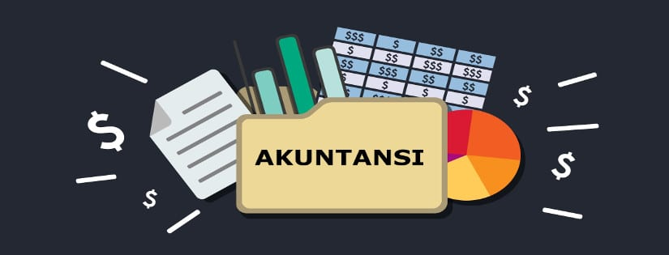

E-Counting
Konsultan Akutansi Terpercaya
Pentingnya Jasa Akuntan yang berkualitas
Dengan jasa akuntan yang berkualitas, bisnis Anda akan mendapatkan lebih dari sekadar pencatatan keuangan. Kami menawarkan pemahaman mendalam tentang industri Anda, kepatuhan terhadap regulasi yang berlaku, dan analisis keuangan yang mendalam untuk membantu Anda mengoptimalkan kinerja keuangan dan mengambil keputusan yang tepat. Dengan fokus pada pengendalian risiko dan optimalisasi keuangan, kami bertujuan untuk membantu bisnis Anda mencapai tujuan mereka dengan lebih efisien dan efektif. Dengan layanan kami, Anda dapat memiliki keyakinan bahwa aspek keuangan bisnis Anda ditangani dengan cermat dan profesional, memberi Anda ruang untuk berkembang
Konsultan Akuntansi E-COUNTING
E-COUNTING menawarkan layanan konsultan akuntansi yang diperkuat dengan fokus pada kualitas dan ketepatan. Tim akuntan kami memiliki pengalaman yang luas dan pemahaman yang mendalam mengenai dinamika bisnis lokal. Kualifikasi dari layanan konsultan akuntansi yang disediakan oleh Basic Accounting memungkinkan untuk optimalisasi pelaporan keuangan yang detail, sejalan dengan prinsip checks and balances yang dapat meningkatkan integritas perusahaan dalam memenuhi kewajiban regulasi yang berlaku.
Mengapa HARUS E-COUNTNG
Layanan BerkualitasKami menyediakan layanan terbaik dengan memahami sepenuhnya kebutuhan bisnis Anda. Setiap solusi yang kami tawarkan dirancang khusus untuk mengatasi tantangan yang dihadapi oleh bisnis Anda. |
Akuntan profesionalDengan dedikasi penuh, kami memastikan kepuasan pelanggan sebagai prioritas utama. Layanan kami mencakup berbagai aspek, mulai dari jasa akuntansi, pelaporan pajak, hingga audit keuangan, semuanya disajikan dengan profesionalitas dan ketelitian tinggi. |
Hemat dan TerjangkauKami menyadari pentingnya efisiensi dalam bisnis Anda. Dengan bantuan konsultan akuntansi dan pajak kami, Anda tidak hanya dapat menghemat biaya, tetapi juga waktu berharga Anda, sehingga Anda dapat fokus pada pengembangan bisnis Anda tanpa khawatir tentang urusan keuangan. |
BerpengalamanDipandu oleh tim yang berpengalaman, kami telah membantu berbagai bisnis untuk mencapai keberhasilan finansial. Dengan pemahaman mendalam tentang dinamika bisnis dan peraturan perpajakan yang berlaku, kami siap memberikan solusi yang sesuai dengan kebutuhan spesifik bisnis Anda. |
Belum memiliki akun? Daftar sekarang!